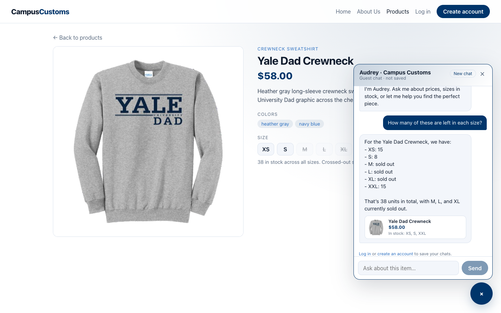
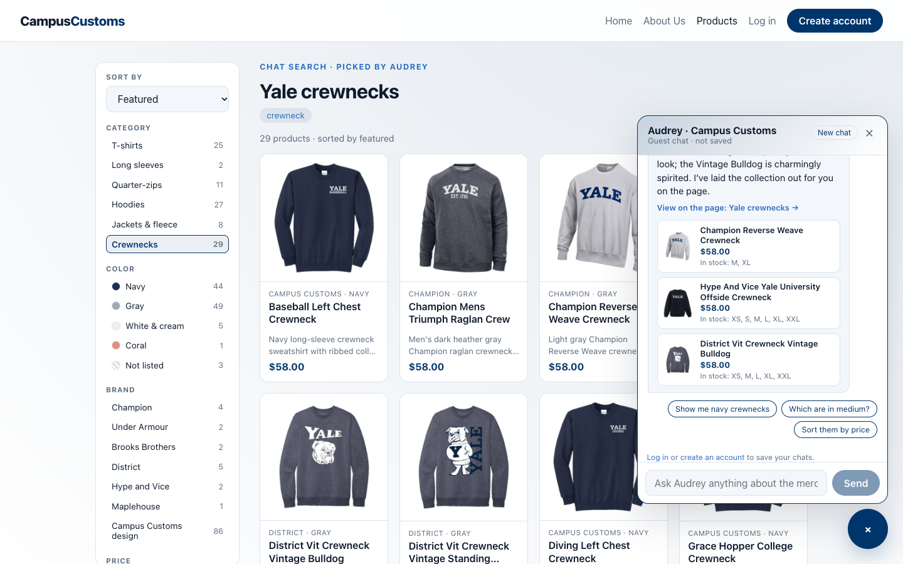
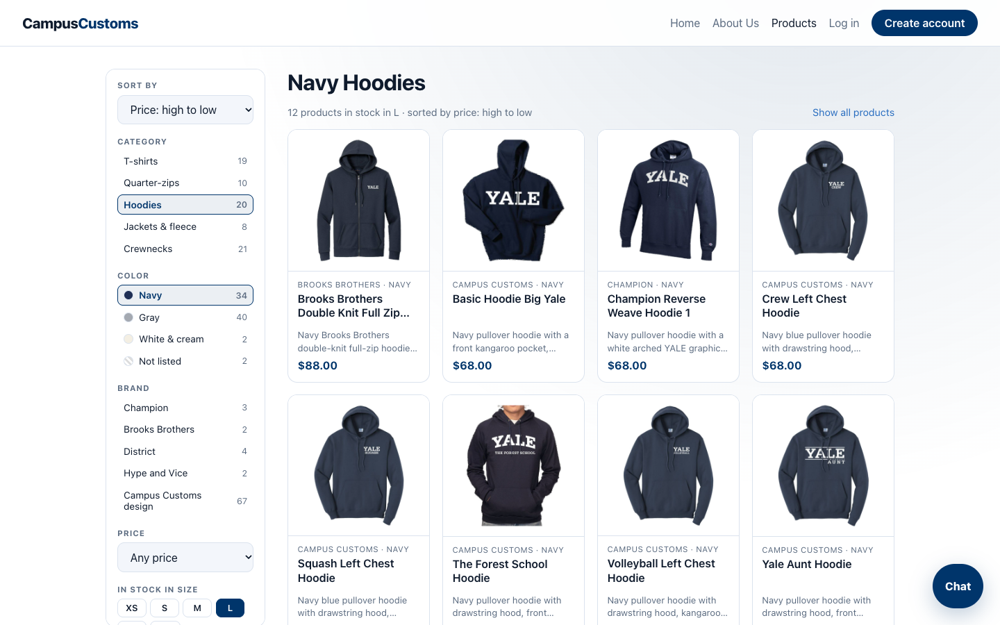

Campus Customs: App Check
Problem 11, Site testing. The live website was driven like a real shopper in Google Chrome. Each check has a screenshot, a short caption, what we expected vs. what appeared, and an independent SQL check against data/campus_customs.db.
| # | Check | What the screenshot shows | Result |
|---|---|---|---|
| 1 | Chat checks the inventory level on an item | On the Yale Dad Crewneck page, Audrey gives the exact units left per size and says plainly which sizes are sold out | PASS |
| 2 | Dynamic search result cards after a category question | "What crewnecks do you have?" fills the page with all 29 crewneck cards, plus 3 picks as cards in the chat | PASS |
| 3 | Usability feature from Problem 9: sort & filter sidebar | Sort by price + Hoodies + Navy + size L → 12 navy hoodies in stock in L, priced high to low, on white equal-size cards | PASS |
1. Chat checks the inventory level on an item PASS
Steps: open the Yale Dad Crewneck product page → open the chat (bottom right) → ask:

Audrey's full reply (answered in 2.8 s):
| What we checked | Expected (database) | On screen | |
|---|---|---|---|
| Units per size | XS 15 · S 8 · M 0 · L 0 · XL 0 · XXL 15 | XS 15 · S 8 · M sold out · L sold out · XL sold out · XXL 15 | ✓ |
| Total units | 38 | "38 units in total" | ✓ |
| Sold-out sizes said clearly | M, L, XL | "M, L, and XL currently sold out" (not "0 left") | ✓ |
| Product card in chat | $58.00; in stock XS, S, XXL | "Yale Dad Crewneck · $58.00 · In stock: XS, S, XXL" | ✓ |
| Knew which item "these" meant | The page being viewed | Answered about the Yale Dad Crewneck without being told its name | ✓ |
SELECT size, quantity FROM inventory WHERE product_id = 'yale-dad-crewneck'; -- XS=15, S=8, M=0, L=0, XL=0, XXL=15 (sum 38); catalogue.price = 58.0
2. Dynamic search result cards after a category question PASS
Steps: start on the Home page → open the chat → ask a category question:

crewneck and the Crewnecks filter highlighted in the sidebar. In the chat, Audrey says how many there are and shows 3 favourites as cards, plus tappable next questions.Audrey's full reply (answered in 2.4 s):
| What we checked | Expected | On screen | |
|---|---|---|---|
| Page updated by itself | Products page with crewnecks | URL /products?q=Yale+crewnecks&kw=crewneck&category=Crewnecks, heading "Yale crewnecks" | ✓ |
| Number of result cards | 29 crewnecks in the database | 29 cards; "29 products" | ✓ |
| Count told to the shopper | 29, all in stock | "We have 29 crewneck styles, and all 29 are in stock" | ✓ |
| Keyword picked from the question | crewneck | Chip crewneck; sidebar Crewnecks (29) highlighted | ✓ |
| Chat cards (real price + sizes) | Champion Reverse Weave: $58, M, XL · Hype and Vice Offside: $58, all sizes · District Vintage Bulldog: $58, XS, M, L, XL, XXL | Same on all 3 cards | ✓ |
| Suggested next questions | Relevant follow-ups | "Show me navy crewnecks" · "Which are in medium?" · "Sort them by price" | ✓ |
SELECT COUNT(*) FROM catalogue
WHERE garment_type IN ('crewneck sweatshirt','raglan crewneck sweatshirt','mockneck sweatshirt','crewneck');
-- 29 (all 29 have at least one size in stock)
3. Usability feature from Problem 9: sort & filter sidebar PASS
Steps: open Products → in the left sidebar choose Sort by: Price high to low → Category: Hoodies → Color: Navy → In stock in size: L.

| What we checked | Expected | On screen | |
|---|---|---|---|
| Filter result | 12 navy hoodies in stock in L (database) | "12 products in stock in L"; 12 cards | ✓ |
| Sort order | Prices high → low | $88.00, then eleven at $68.00, all in descending order | ✓ |
| Active choices visible | Hoodies, Navy, L highlighted | All three highlighted; Sort shows "Price: high to low" | ✓ |
| Choices kept in the URL | Refresh/share keeps the view | /products?sort=price_high&category=Hoodies&color=Navy&size=L | ✓ |
| White photo backgrounds | All white | 12 / 12 photo corners white (measured) | ✓ |
| Equal-size boxes | Same height | All 12 cards exactly 364 px tall | ✓ |
SELECT COUNT(*), group_concat(price, ' ') FROM (
SELECT c.price FROM catalogue c JOIN inventory i USING (product_id)
WHERE lower(c.garment_type) LIKE '%hood%' AND lower(json_extract(c.colors,'$[0]')) LIKE '%navy%'
AND i.size = 'L' AND i.quantity > 0
ORDER BY c.price DESC);
-- 12 | 88.0 68.0 68.0 68.0 68.0 68.0 68.0 68.0 68.0 68.0 68.0 68.0
Bugs found by this testing, and fixed
The first test run's screenshots exposed three problems. All were fixed, and every screenshot above is from the final run after the fixes.
| Found | Cause | Fix |
|---|---|---|
| Yale Dad Crewneck photo had black patches between the sleeves and the body and a speckled dark outline | The background cleanup only whitened black connected to the photo's edge; gaps enclosed by an arm were missed | The photo cleanup (now tools.prepare_product_photos()) also whitens large, flat, pure-black enclosed areas (average brightness ≤ 5 of 255). Dark navy fabric shadows (average 11–15) are left alone, and black crest prints are kept. Re-scanned all 102 photos. |
| Fixed photos could still show the old version | The photo URL's version number came from the folder's timestamp, which doesn't change when files are overwritten | The version now comes from the newest photo file, so browsers fetch the fresh photos |
| After a category question, the page heading still said "All the merch" | Chat "browse" results didn't pass Audrey's title to the page | The page now shows "Chat search · picked by Audrey" with the title and keywords. Manual filters get a matching heading (e.g. "Navy Hoodies"), and the chat title is dropped if the shopper changes the filters themselves. |
How this was tested (and how to re-run it)
- Start the backend from
backend/:uvicorn main:app --reload --port 8000 - Start the website from
frontend/:npm run dev - Run the check from
frontend/:npm run app-check
The script (frontend/scripts/app_check.cjs) opens headless Google Chrome, clicks and types exactly as a shopper would, waits for Audrey's reply, saves the screenshots to output/app_check_images/, and records everything that appeared on screen (replies, cards, counts, URLs, card heights, photo corner colors) in output/app_check_images/results.json. Numbers were then checked with the SQL shown under each check.
Files for grading: output/app_check.html (this page) · output/app_check_images/inventory.png · output/app_check_images/category_search.png · output/app_check_images/usability_sort_filter.png · output/app_check_images/results.json